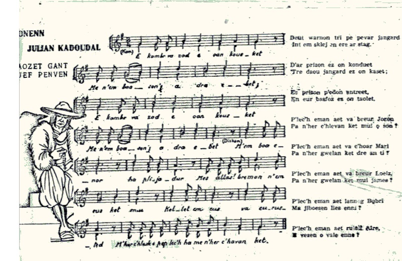
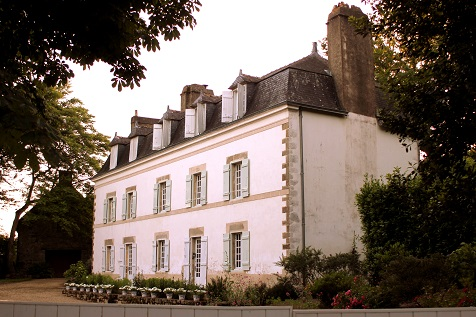

|
A propos du texte Dans un article de "Ar Soner" (1967, N°154, pp. 4 et 5), intitulé Chouannerie et Vannetais", le musicien breton E. Allain écrivait: "... C'est après 1914 que [cette marche] cessa d'être répandue. Elle était connue sous le titre de "Sonnen M'ami" ou "Sonnen Julian Blev-Ruz". "M'ami" et "Blev-Ruz" (Bléo Ru) étant les deux surnoms de Julien Cadoudal, un des trois frères de Georges. Georges Cadoudal avait repris les armes contre Bonaparte. La flotte britannique l'avait débarqué le 8 juin 1800 à Houat d'où il avait rejoint les Chouans de Guillemot et Sol de Grisolles qu'il avait réorganisés en 9 régions, chacune sous les ordres d'un adjudant général. Après un aller-retour en Grande-Bretagne, il est accusé, à tort, d'avoir trempé dans l'attentat de la machine infernale du 24 décembre 1800. L'arrestation de son frère Julien, âgé de 25 ans, le 3 février 1801, par les gendarmes de Kerléano, est un des multiples épisodes de la répression qui s'abattit sur les Royalistes. Une semaine plus tard, le 8, son transfert à la prison de Lorient est décidé mais en chemin, les gendarmes le fusillent sous prétexte qu'il avait cherché à s'échapper. Plusieurs autres chefs tombent sous les coups des colonnes mobiles. Georges Cadoudal parvint à s'enfuir pour l'Angleterre, en mars 1802. Il prépare un nouveau complot avec l'aide du général Pichegru. Le 9 mars après une violente échauffourée avec la police il est arrêté. Le 25 juin 1804, il est décapité en place de Grève. Il meurt en criant "Vive le roi!" Son corps est remis au médecin Larrey pour des expériences médicales. La Restauration organisera ses funérailles et ses restes seront dignement inhumés dans un mausoilée à Kerléano en Auray. A propos de la mélodie C'est donc entre le 2 et le 8 février 1801 que ce chant a été composé. Il est peu probable que Julien ait écrit autre chose que les paroles vannetaises. Même s'il avait composé une mélodie originale, il est impossible qu'il ait eu le temps de la transmettre oralement. On peut donc penser que le paroles ont été appliquées à un air connu, peut-être transformé, ou à un air nouveau, l'un et l'autre pouvant très bien dériver du timbre qui a donné naissance à l'air "Maudit sois-tu, carillonneur". Le chant, référencé M-00027 dans la classification Malrieu, a été publié par E, Allain dans "Ar Soner" (cf ci-dessuus), par Loeiz Herrieu, en1907 dans "Kloc'hdi Breiz", n° 146, p. 1395, par la revue "Dihunamb" 1907, N° 7 [25], p. 407-408; par Yves Le Diberder, dans "Chansons traditionnelles du pays vannetais (1910-1915)". On le trouve sous forme manuscrite chez Edouard Gilliouard: "E camp me zad...", manuscrit 43 J 33 à 43 J 94; et chez Le Diberder qui l'a noté comme une danse "Jabedow" (Jabadao) intitulée "M'em es ped inour", manuscrit déposé aux Archives départementales du Morbihan... Il existe aussi sous forme de feuille volante "Sonnen Julian Kadoudal", F-03733 chant C-04581 (cf. Illustration ci-dessus). La bataille de Coëtlogon L'officier chouan Jean Rohu (1771-1849) écrivait à propos de la bataille de Coëtlogon du 16 juillet 1795: "Nous ne perdîmes que notre général, [le chevalier Vincent de Tinténiac] qui s'avança imprudemment sur un grenadier qui se glissait d'arbre en arbre dans l'avenue, et qui prit d'abord la fuite; mais se trouvant trop pressé, se retourna et tira le général presque à bout portant. Julien Cadoudal, frère de Georges, le reçut dans ses bras, et le grenadier fut tué par Joseph Madec, capitaine de la compagnie de paysans de la paroisse de Carnac. » Sachant que, comme on l'a dit, un des surnoms de Julien Cadoudal , était "Blev-Ruz" (Le Rouquin), on peut se demander si, en dépit des arguments soulevés par Donatien Laurent (différence de prénoms, discours de la mère toujours vivante invoquant des frères morts...) il ne serait pas le véritable héros du chant Les Chouans et non cet hypothétique "Jean-le-Rouquin" (Yann Blev-Ruz) que la muse bretonne lui aurait substitué dans 2 versions dont une seule évoque la mort de Tinténiac, substitution reprise par La Villemarqué dans le Barzhaz. |
About the lyrics In an article in "Ar Soner" (1967, N ° 154, pp. 4 and 5), titled Chouannerie et Vannetais ", the Breton musician E. Allain wrote: "... After 1914 [this march] ceased to be widespread. It was known as "Sonnen M'ami"or "Sonnen Julian Blev-Ruz". "M'ami" and "Blev -Ruz" (Bléo Ru) being two nicknames of Julien Cadoudal, one of Georges' three brothers. Georges Cadoudal had resumed arms against Bonaparte. The British fleet had landed him on June 8, 1800 at Houat Island from where he joined the Chouan amy under Guillemot and Sol de Grisolles which he reorganized into 9 regions, each under the orders of an Adjutant general. After a return trip to Great Britain, he was wrongly accused of involvement in the "infernal machine attack" of December 24, 1800. The arrest of his 25-year-old brother Julien, on February 3, 1801 , by the gendarmes of Kerléano, is one of the multiple episodes of the repression which fell on the Royalists. A week later, on the 8th, his transfer to Lorient prison was decided, but on the way, the gendarmes shot him while he allegedly attempted to escape. Several other leaders fell under the blows of the "mobile columns". Georges Cadoudal managed to escape to England in March 1802. He prepared a new plot with the help of General Pichegru. On March 9, after a violent clash with the police, he was arrested. On June 25, 1804, he was beheaded on the Place de Grève in Paris. He died shouting "Long live the king!" His body was handed over to Doctor Larrey for medical experiments. The Restoration was to organize for him a dignified funeral and had his remains worthily buried in a mausoieum in Kerléano near Auray. About the tune Fron the above we may infer that it was between February 2 and 8, 1801 that this song was composed. It is likely that Julien only wrote the Vannes dialect lyrics. Even if he had set to it an original melody, we may wonder if he had time to transmit it orally. We may therefore assume that the lyrics were appended to a possibly modified old tune, or to a new tune, both of which being derived from the French tune "Cursed are you, bellringer'". The song, referenced M-00027 in the Malrieu classification, was published by E, Allain in "Ar Soner" (see above); by Loeiz Herrieu in 1907 in "Kloc'hdi Breiz", n ° 146, p. 1395: by the review "Dihunamb" 1907, No. 7 [25], p. 407-408; by Yves Le Diberder, in "Traditional songs of the Vannes country (1910-1915)". It can be found in handwritten form as "E camp me zad ..." in Edouard Gilliouard's manuscript 43 J 33 to 43 J 94; and in the MS collection of Le Diberder who noted it as a "Jabedow" dance (Jabadao) entitled "M'em es ped inour", a manuscript kept in the Departmental Archives of Morbihan ... It also exists as a loose sheet song titled "Sonnen Julian Kadoudal", F-03733 song C-04581 (cf. picture above). The Battle of Coëtlogon The Chouan officer Jean Rohu (1771-1849) wrote about the battle of Coëtlogon on July 16, 1795: "We only lost our general, [Chevalier Vincent de Tinténiac] as he rushed imprudently towards a grenadier who had been slipping from tree to tree along the road, and at first fled. But, being out of breath, he suddenly turned around and shot the general almost at close range. Julien Cadoudal, brother of Georges, received him in his arms. The grenadier was killed by Joseph Madec, captain of the parish of Carnac country militia. " Knowing that, as already stated, one of Julien Cadoudal's nicknames was "Blev-Ruz" (The Red-haired one), one can wonder if, despite the arguments raised by Donatien Laurent (different first names, mother still alive, invoking his dead brothers in her speech ...) he could not be the real hero of the song Les Chouans and not the supposed "Jean-le-Rouquin" (Yann Blev-Ruz) whom the Breton muse would have substituted for him in 2 versions, only one of which mentions the death of Tinténiac, a substitution also performed by La Villemarqué in the Barzhaz. |
|
BREZHONEK (Dihunamb 1907 n° 7 1. E kambr va zad e oan kousket Ha n'em-boa soñj a dra e-bet DISKAN M'em-boa enor ha plijadur, Med allas, bremañ n'em-eus ket mui, Kollet am-eus va eürusted: M'her c'hlask e pep-lec'h ha me n'her c'havan ket 2. Deuet eno tri pe pe'ar jandarm, Int em stlej en ere ha stag 3. D'ar prizon ez on konduet: 'Tre daou jandarm ez on kaset. 4. Er prizon p'edon antreet En ur basfos ez on taolet. 5. P'lec'h ema aet va breur Jozon Pa n'her c'hlevan ket mui o son? 6. P'lec'h ema aet va breur Loeiz Pa n'her gwelan ket mui jamez?, 7. P'lec'h ema aet va c'hoar Mari Pa n'her gwelan ket dre an ti? 8. Pelec'h ema douaroù va zad E vezen-me o c'hardellat? 9. P'lec'h ema aet saout brav va zad E gasen d'ar prad da vouetat? 10. P'lec'h ema aet roñsed va zad Ez aen gante da labourat? 11. Pelec'h ema aet chas ma zad Ez aen ganto da jiboesat? 12. P'lec'h ema aet lannig Bubri Ma jiboesen lies enni? 13. P'lec'h ema aet ruioù Alre E vezen o vale enne? Skritur KLT gant Kristian Souchon |
TRADUCTION FRANCAISE (Revue "Dihunamb" 1907, N°7) 1. Chez mon père quand je dormais Me croyant en sécurité, REFRAIN Adieu les honneurs, les plaisirs! Ils s'enfuient pour ne plus revenir. C'en est fini de mon bonheur Je le cherche en vain. Il déserte mon coeur. 2. Deux ou trois gendarmes soudain M'ont saisi, m'ont couvert de liens, 3. Et deux d'entre eux à la prison M'ont conduit, comme de raison. 4. Dans une basse-fosse ils m'ont Jeté. Quelle abomination! 5. Mon frère Joseph. Que fais-tu? Tu chantais. Je ne t'entends plus. 6. Mon frère Louis, toi que j'aimais Dis, te reverrai-je jamais? 7. Ma soeur Marie, où es tu donc, La douce fée de la maison? 8. Les champs de mon père sont loin Dont je parcourais les chemins. 9. Je ne verrai plus ses troupeaux Que je menais aux prés tantôt. 10. Ni ses nobles chevaux puissants Avec lesquels j'oeuvrais aux champs. 11. Père, reverrai-je vos chiens, Ces bons chiens qui chassaient si bien 12. Parmi la lande de Bubry Où j'allais si souvent, jadis? 13. Où sont passées les rues d'Auray Où j'aimais tant me promener? Traduction: Christian Souchon (c) 2021 |
ENGLISH TRANSLATION (Journal "Dihunamb" 1907, N°7) 1. My father's house, why was my sleep Over which you watched, so deep? REFRAIN Honours and pleasures all, goodbye! Never again, say, will you draw nigh! My bliss has passed for evermore: Never shall I get what I am looking for! 2. Two or three gendarmes at a bound Seized me and covered me in bonds, 3. And to a prison they took me Flanked by a guard: I could not flee! 4. They locked me up in a dungeon Worst place all over the prison! 5. Brother Joseph. Where have you gone? Do you sing now in such low tone? 6. Where have you gone, my brother Louis, Whom, look as I will, I don't see? 7. My sister Mary, where are you? Who will cheer me up, as you do? 8. My father's fields are far away Whose paths I walked night and day. 9. My father's cows I used to lead How will you go now to the mead? 10. The horses of my father, where Are they, whose labour I did share? 11. Shall I hear his hunting dogs bark Again, when the day's getting dark 12. On Bubry's moor, my favourite Hunting place? When shall I see it? 13. Where have the streets of Auray gone? When shall I tread their cobblestone? Translated by Christian Souchon (c) 2018 |
